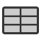
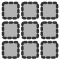
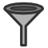
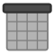
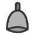
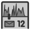
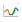

Alois Help
Logverarbeitung Übersicht
| Logs |
Pumpy |
Prisma |
Dobby |
View |
Filter |
|
 |
|
 |
|
 |
| Logs werden per Syslog verschickt. |
"Raw" gespeicherte Logs in Tabellen auf Insink. |
Log informationen werden von Pumpy geholt und auseinandergenommen. |
Aufgesplittete Logmeldungen in Dobby-Datenbank. |
Mit SQL generierte Ansichten der Log-Tabellen. |
Hilfswerkzeug zum Filtern bestehender Ansichten. |
|
Daten Sets für Reporting |
|
 |
Reporting Übersicht
| Daten Set |
Sentinel |
|
Alarm |
|
 |
|
 |
|
Von Sentinel generierte Alarme. |
|
Report |
| Zusammengesetzt aus Views + Filter. |
Periodisch ausgeführter Wächter. |
|
 |
|
Periodisch von Sentinel generierte Reporte. |
Anzeigen
Gewünschte View auswählen. Aus Menu:

oder aus View Liste:

Es erscheint dann eine Tabellenansicht der gewählten View.

Beschreibung der Elemente:
- Hier kann durch die Datensätze navigiert werden.
- Dies ist der Aktuelle aktive Filter. Hier kann die Zeitspanne in Worten eingegeben werden.
- Wenn mit der Maus über eine Tabellenzelle gefahren wird erscheint dieses Menu. Hier können neue Bedingungen eingefügt werden. Die neuen Bedingungen werden dann bei 2. aufgeführt.
 Es werden nur noch Zeilen angezeigt welche in dieser Spalte diesen Wert haben.
Es werden nur noch Zeilen angezeigt welche in dieser Spalte diesen Wert haben.
 Es werden alle Zeilen ausgeschlossen welche diesen Wert haben.
Es werden alle Zeilen ausgeschlossen welche diesen Wert haben.
- Wenn mit der Maus über einen Tabellkopf gefahren wird erscheint dieses Menu.
 ,
, Datensätze auf- oder absteigend sortieren.
Datensätze auf- oder absteigend sortieren.
Pie- oder Barchart mit der Verteilung der Werten dieser Spalte.
 Wenn der Typ der Spalte numerisch ist, oder ein Datum/Zeit enthält, können auch Liniengrafiken dargestellt werden.
Erstellen
Entweder den aktuellen Filter aus der View-Azeige speicher:

Oder den Menupunkt Reporting -> Filters -> New... wählen:

Es erscheint dann folgende Maske:

- Hier können Bedingungen entfernt werden.
- Hier können die Bedingungen bearbeitet werden.
- Die Beschreibung des Filters
- Hier kann ein Filter aus in Zip-Form geladen werden. (Wird nur zum hin- und herkopieren zwischen verschiedenen Servern verwendet)
Erstellen
Über den Tabellenkopf in der View-Ansicht.

Oder über den Knopf "Chart" in der View-Ansicht.

Bearbeiten in View-Ansicht

- Indem auf die Grafik geklickt wird können die Werte weiter eingegrenzt werden. Es werden dann die Tabelleneinträge angezeigt welche das ausgewählte Element repräsentieren.
- Hier kann angegeben werden aufgrund welcher Spalten die Grafik erstellt werden soll.
- Hier kann die Sortierung bestimmt werden.
- Hier kann der Grafiktyp gewählt werden. vlnr: Bar-Chart, Line-Chart, Pie-Chart. Einschränkungen: Line-Charts können nur für X-Achsen mit numerischen Typen oder Datum/Zeit gewählt werden. Die Multichart Spalte kann nicht für Pie Charts gewählt werden.
- Nachdem änderungen in der Maske vorgenommen wurden, kann die Grafik mit dem Update-Knopf aktualisiert werden.
- Unter der Grafik erscheint die Erstellungszeit der Grafik. Zum Teil werden die Daten zwischengespeichert. Um die Daten und die Grafik neu zu generieren, den Reload Knopf verwenden.
Chart Typen Übersicht
| Typ |
2 Dim. |
3 Dim. |
4 Dim. |
| Spalten |
date |
date,level |
date,level,facility |
| Pie |

| 
| -
|
| Bar |

| 
| 
|
| Line |

| 
| 
|
| Bar Stacked |
-
| 
| 
|
| Line Stacked |
-
| 
| 
|
Erstellen
Im Menu Reporting -> Report Template -> New...

Es erscheint folgende Maske:

- Hier kann der Report beschrieben werden. Bei Title kann der Name angegeben werden welcher in den Emails als Subject erscheinen soll.
- Hier wird das eigentliche Template in HTML eingegeben. Die Werte, welche unten am Textfeld angegeben sind, werden beim Report erstellen ersetzt.
- View hat keinen Einfluss auf die Erstellung eines Reports. Sie wird nur für Plausibilitäts-Prüfungen verwendet und kann auch leer sein. Wenn ein Wert eingefügt ist, dann können nur Charts und Tables ausgewählt werden, welche auf die angegebene View anwendbar sind.
- Charts und Tables können erst hinzugefügt werden wenn das ReportTemplate einmal gespeichert wurde.
Hinzufügen von Charts und Tables
Bei der Ansicht eines Report-Templates können nun die Charts angegeben werden.

- Hier kann ein Chart ausgewählt und hinzugefügt werden.
- Hier kann eine Voransicht mit Zufällig generierten Daten angezeigt werden.
- Hier kann eine Voransicht mit Daten aus der oberhalb angegebenen Datasource und Time Range erstellt werden.
- Hier kann ein Report mit Daten aus der oberhalb angegebenen Datasource und Time Range erstellt werden. Der Report wird dann gespeichert und erscheint unter Reports
Manuell erstellen
| Data Set |
|
Report Template |
|
Report |
|
|
|
|
|
Das gewünschte ReportTemplate aus Menu auswählen:

Es erscheint die Detailansicht des Report-Templates mit folgender Maske:

- Die View für das Data-Set auswählen.
- Die Zeitspanne für das Data-Set eingeben.
- Knopf "Save as Report" betätigen.
Es sollte dann nach einiger Zeit der Report angezeigt werden. Wenn wieder die Detail-Anzeige des Report-Templates erscheint, Fehlermeldung beachten.
Sentinel Editieren

- Hier kann angegeben, was bei der Ausführung dieses Sentinels generiert werden soll. Der Sentinel ist ausgeschaltet wenn hier disabled gewählt wird.
- Hier wird angegeben in welchen Intervallen dieser Sentinel ausgeführt wird. Bitte konsultieren Sie die Online-Hilfe für mehr Details:
 dann
dann 
- Hier kann die Email-Versendung ein oder ausgeschaltet werden. Das Email wird an die in Mail to definerte Adresse versendet.
- Geben sie hier die "Schwelle" an, ab wann die in 1. ausgewählte Aktion ausgelöst werden soll. D.h. wenn die Anzahl Zeilen den angegebenen Wert übersteigt, wird ein Report und/oder Alarm generiert und ggf. eine Email verschickt.
- Hier wird die View für das Daten Set definiert.
- Hier wird die Zeitspanne für die zu selektierenden Daten angegeben.
- Hier werden die anzuwendenden Filter für die View angegeben. (Kommaseparierte Liste)
- Hier wird das Alarm-Level angegeben, wenn ein Alarm generiert werden soll.
- Hier wird das Report-Template angegeben, wenn ein Report generiert werden soll.
| Data Set |
|
Report Template |
|
Sentinel |
|
Report |
|
|
|
|
|
|
|
Damit periodisch ein Report generiert wird, muss ein Sentinel mit folgenden Angaben erstellt werden (vgl. Sentinel Erstellen):
- Bei 1: Action = report
- Bei 2: Cron interval = GEWÜNSCHTES INTERVAL
Zum Beispiel einmal täglich um 17:15 Uhr: 15 17 * * *
- Bei 4: Threshold = GEWÜNSCHTEN WERT
Normalerweise 0
- Bei 5,6,7: Gewünschte View, Time Range und Filter auswählen
- Bei 9: Das Report Template auswählen
| Data Set |
|
Sentinel |
|
Alarm |
|
|
|
|
|
Damit periodisch Alarme generiert wird, muss ein Sentinel mit folgenden Angaben erstellt werden (vgl. Sentinel Erstellen):
- Bei 1: Action = alarm
- Bei 2: Cron interval = GEWÜNSCHTES INTERVAL
Zum Beispiel einmal täglich um 17:15 Uhr: 15 17 * * *
- Bei 4: Threshold = GEWÜNSCHTEN WERT
Normalerweise 0
- Bei 5,6,7: Gewünschte View, Time Range und Filter auswählen
- Bei 8: Alarm Level auswählen
Alarm mit Report generieren
| Data Set |
|
Report Template |
|
Sentinel |
|
Alarm mit Report |
|
|
|
|
|
|
|
Damit periodisch Alarme generiert wird, muss ein Sentinel mit folgenden Angaben erstellt werden (vgl. Sentinel Erstellen):
- Bei 1: Action = alarm_and_report
- Bei 2: Cron interval = GEWÜNSCHTES INTERVAL
Zum Beispiel einmal täglich um 17:15 Uhr: 15 17 * * *
- Bei 4: Threshold = GEWÜNSCHTEN WERT
Normalerweise 0
- Bei 5,6,7: Gewünschte View, Time Range und Filter auswählen
- Bei 8: Alarm Level auswählen
- Bei 9: Das Report Template auswählen
Ampel

- Grün: Es gibt keine zu bearbeitenden Alarme.
- Orange: Es gibt zu bearbeitende Alarme mit Level error oder warning.
- Rot: Es gitb zu bearbeitende Alarme mit Level emergency, alert oder critical.
Alarm Liste
Auf Overview Seite oder im Header auf die Ampel klicken.
Es erscheint folgende Seite:

- Hier sind die aktuellen (zu bearbeitenden) Alarme sortiert nach Level Zeit.
- Hier sind die zuletzt bestätigten alarme.
- Hier sind die aktuellen Alarme welche nur zu Informationszwecken eingerichtet wurden. (Alarm Level <= 5: notice)
Details

- Created at: Wann der Alarm ausgelöst wurde.
- Data: Die Datensätze welche den Alarm ausgelöst haben in Textform.
- Report: Falls vorhanden, Link auf zugehörigen Report.
- Sentinel: Falls vorhanden, Sentinel welcher den Alarm ausgelöst hat. Hier ist auch die Beschreibung des Alarmes und allfällig auszulösende Massnahmen enthalten.
Acknowlege
In der Alarmliste auf edit klicken:

Es erscheint folgende Maske:

- Kommentar einfügen, warum der Alarm ausgelöst wurde und weshalb der Alarm acknowledged werden kann.
- Acknowledge checkbox betätigen.
- Update drücken.
Datenbank Details anzeigen

Unnötige (zu lange laufende) Queries abbrechen.

- Mit "Kill" kann die angezeigte Query abgebrochen werden.
Flavio Pellanda
Last modified: Tue Jul 8 01:02:53 CEST 2008